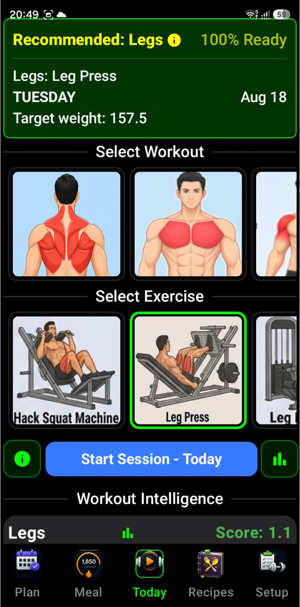
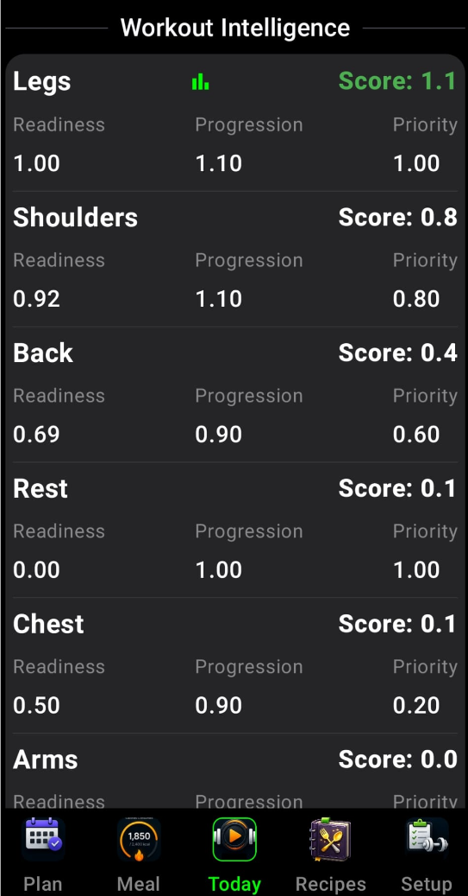

How IronSet guides, scores, and tracks every training session.
3.1 The "Today" Dashboard
The Today dashboard serves as your personal workout dashboard and "command centre" for the day. It's designed to help you quickly choose a workout, see your progress, and get AI-powered guidance. Here is a breakdown of its interface and functionality.
1 Workout & Exercise Selection
Active Workouts — The widget displays a list of workouts you've previously set up. You can easily switch between different routines (like "Push," "Pull," or "Legs").
Exercise Preview — Once a workout is selected, it shows the specific exercises included in that routine.
Smart Scrolling — If you have many workouts or exercises, the app automatically scrolls to highlight your currently active selection so you don't have to hunt for it.
2 AI Coach & Insights
This is the "brain" of the widget. By tapping the Info or Chart icons:
Performance Analysis — The app looks at your recent history (like your last 3 sessions for a workout) and sends it to an AI (Google Gemini).
Personalized Recommendations — It generates specific advice, such as whether you should increase your weight, adjust your reps, or focus on a particular form improvement.
Apply & Start — If the AI suggests a specific "Autopilot" adjustment (e.g., "Increase bench press to 60kg for better progression"), you can tap "Apply & Start" to immediately begin your session with those optimized targets.
3 Workout Readiness & Scoring
The widget calculates Workout Scores using a background service. This helps you identify which workout you are most "ready" for based on your recovery and past performance, guiding you to pick the most effective session for that day.
The Workout Readiness & Scoring system acts as an intelligent advisor that helps you decide which workout is best for you to perform today. It calculates an overall Workout Score for each of your routines using three main factors:
Readiness (The Recovery Factor)
This measures how recovered you are for a specific workout. It looks at your recent training volume and fatigue levels. If you've worked those muscles hard very recently, your readiness score will be lower, suggesting you might need more rest.
Progression Opportunity (The Growth Factor)
This is a "bonus" score (1.1x) given to workouts where you are currently trending upward. The system looks at:
Performance Trends — Is your recent performance better than or equal to your long-term average?
Success History — Did you successfully complete your last session without reaching premature failure?
If both are true, the app identifies this as a prime opportunity to make progress.
Schedule Priority (The Consistency Factor)
This tracks how long it has been since you last performed a specific workout. The app uses a 5-day recovery cycle as a target:
As more days pass since you last did a "Leg" day, its priority score increases.
It maxes out once you've hit the target interval, effectively "flagging" that workout as overdue.
The "Rest" Option
The system also calculates a score for Rest. If the readiness scores for all your actual workouts are low (meaning you are generally fatigued), the "Rest" score will rise to the top, signalling that a recovery day might be more beneficial than hitting the gym.
How to Use It in the UI
In the Workout Intelligence section of the widget, you'll see these scores displayed:
Green Score (1.0+)Recommended — This indicates a highly recommended workout. You'll see a Chart/Insight icon appear next to these, allowing you to get an AI-generated plan for that specific session.
Readiness / Progression / Priority values — You can see the raw numbers for each metric to understand why a workout is being recommended (e.g., "I have a high priority because I haven't done this in 6 days").
4 Hands-Free Navigation (Tilt Control)
If enabled in your settings, the widget supports Tilt Navigation. This allows you to scroll through your workout list by simply tilting your phone — useful when your hands are sweaty or you're wearing lifting gloves.
5 Last Session Recap
It displays a summary of your Last Workout Details, so you can quickly remind yourself of the weights and reps you achieved last time before you start your new set.
In Short
It's a "one-stop shop" where you can see what you've done, get AI-driven advice on what to do next, and jump straight into a session with optimized goals.
Your central hub for daily training.
Workout Selection: Choose from your active workout routines.
Workout Score: IronSet evaluates every routine based on:
Readiness: Your physical preparedness based on recent fatigue and recovery.
Progression: The mathematical opportunity to increase volume or intensity.
Priority: How the workout aligns with your weekly schedule.
Recommendations: If a workout score exceeds 1.0, the Bar Chart icon will become active, offering an AI-optimized session plan.


The screen is designed to start and track your workout session.
Here, you can find all the workouts and exercises you selected on the Setup screen. Select the workout or exercise you want to perform and start tracking your progress.
Your central hub for daily training.
Workout Selection: Choose from your active workout routines.
Workout Score: IronSet evaluates every routine based on:
Readiness — Your physical preparedness based on recent fatigue and recovery.
Progression — The mathematical opportunity to increase volume or intensity.
Priority — How the workout aligns with your weekly schedule.
Recommendations: If a workout score exceeds 1.0, the Bar Chart icon will become active, offering an AI-optimized session plan.
📊 Today Dashboard — screen preview
The screen is designed to start and track your workout session. Here, you can find all the workouts and exercises you selected on the Setup screen. Select the workout or exercise you want to perform and start tracking your progress.
3.2 Gym Co-Pilot (Autopilot)
Gym Co-Pilot (Autopilot) is your intelligent, real-time training assistant. It is purely based on your past workout sessions logged and does not use AI insights. It is currently undergoing pilot testing and its logic will be improved. Once you've selected an AI-recommended workout, Autopilot takes over the logistics of your session so you can focus entirely on the lifting.
Here is a detailed breakdown of how it works:
1 Guided Progression (Sets & Reps)
Autopilot doesn't just tell you what to do; it manages your entire session flow:
Warm-up IntegrationYellow — It automatically schedules and tracks warm-up sets before your workingRed sets to ensure you're prepared.
Automatic Transitions — Once you finish a set, it automatically queues up the next one or moves you to the next exercise in your routine.
Completion Tracking — It tracks your progress through the entire workout, letting you know when you've successfully finished your planned routine.
2 Smart Weight Adjustments
One of the most powerful features is how it handles changes on the fly. If you find a weight is too heavy or too light:
Dynamic Rep Scaling — If you manually adjust the weight, the Co-Pilot instantly recalculates the required number of reps to maintain the same "Target Intensity" (1RM). This ensures you're still getting the intended training stimulus even if you change the load.
3 Equipment Flexibility (Deferring Exercises)
Gyms get crowded. If the equipment for your next exercise is occupied:
Defer Exercise — You can "push" your current exercise to the end of the workout queue. The Co-Pilot will immediately bring up the next exercise in your list so you don't waste time waiting.
4 Performance & Failure Tracking
The Co-Pilot is constantly "watching" your stats to update your fitness profile:
Failure Reporting — If you hit a point where you can't complete a rep, you can report it. The system records exactly how many reps you finished before failure.
Instant Analytics — For every set completed, it calculates:
Performance — How you did compared to your historical "Best."
Fatigue — How much your strength is dropping as the session progresses.
Estimated 1RM — An updated estimate of your maximum strength based on that specific set.
5 Session Management
Pause & Resume — You can pause your workout if you need to step away. If you resume on the same day, it picks up exactly where you left off. If you wait until the next day, it intelligently marks the session as complete to keep your data clean.
Skip Option — If you're short on time or an injury flares up, you can skip an entire exercise, and the Co-Pilot will reorganize the remaining session for you.
🏋️ Gym Co-Pilot — session flow preview
Summary
Think of the Gym Co-Pilot as a digital personal trainer who:
Writes your plan (based on AI insights).
Adjusts your plan (if weights change or machines are full).
Logs your results (calculating your strength gains in real-time).
⚠️
Note: Gym Co-Pilot is in pilot mode Pilot — it is being tested and changes will follow.